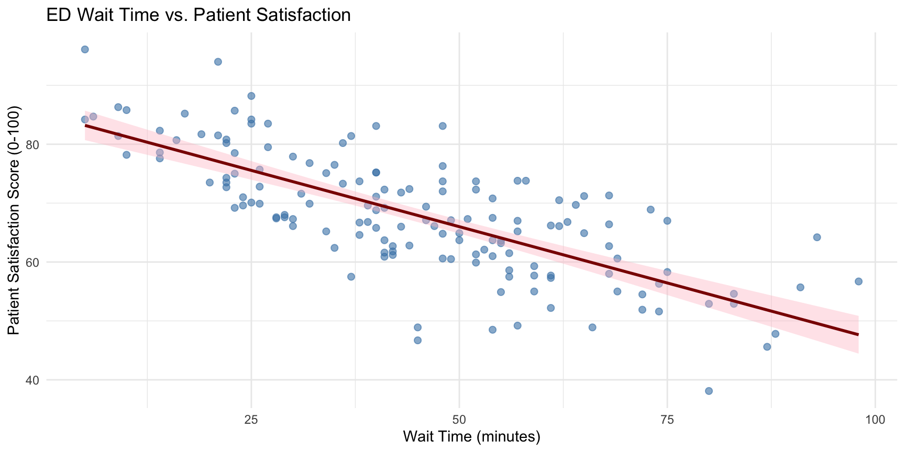

Make predictions for new observations using fitted models
Identify multicollinearity using VIF and understand how to handle it
From Correlation to Regression
In Week 8, we used correlation to answer:
“Is there a relationship between nurse staffing hours and patient satisfaction?”
Linear regression extends this by answering more actionable questions:
How many points does satisfaction change for each additional nursing hour?
If we increase staffing to 8 hours per patient day, what satisfaction score can we expect?
Among wait time, staffing, and facility age, which factors significantly explain patient satisfaction?
Types of Linear Regression
Linear regression models the linear relationship between independent variables (IV) and a dependent variable (DV):
e.g., Are older patients more likely to have longer lengths of stay (LOS)?
Dependent variable (Y): The outcome we want to predict or explain (LOS)
Independent variable(s) (X): The predictor(s) we use to explain Y (age)
The number of independent variables determines the type of regression:
Simple Linear Regression: One predictor → outcome (e.g., Patient age → LOS)
Multiple Linear Regression: Two or more predictors → outcome (e.g., Age + Severity + Insurance → LOS)
Simple Linear Regression
What Is Simple Linear Regression?
Simple linear regression models the relationship between one independent variable (X) and one dependent variable (Y) using a straight line (linear model).
When to use it:
Quantify the strength and direction of a linear relationship between two continuous variables
Predict an outcome based on a single predictor
Test whether a linear relationship is statistically significant
The Model Equation
\[Y_i = \beta_0 + \beta_1 X_i + \epsilon_i\]
\(Y_i\) = Dependent variable: the outcome we predict (e.g., satisfaction score)
\(X_i\) = Independent variable: the predictor (e.g., wait time)
\(\beta_0\) = Intercept (a or b₀): predicted Y when X = 0 (The starting point)
\(\beta_1\) = Slope (b or b₁): change in Y per one-unit increase in X (“How much does Y change?”)
Background: Research has consistently shown that ED wait times are negatively associated with patient satisfaction. A 2021 study (Abass et al.) found that being informed about waiting time showed a moderately strong positive correlation with patients’ overall rating.
Let’s build a regression model to quantify how much ED wait time impacts patient satisfaction scores, and use it to make predictions.
Load the Data
Let’s load the required packages and dataset using the code:
Before running regression, always visualize your data:
Code
ggplot(ed_data, aes(x = wait_time_minutes, y = satisfaction_score)) +geom_point(alpha =0.6, size =2, color ="steelblue") +geom_smooth(method ="lm", se =TRUE, color ="darkred", fill ="pink") +labs(x ="Wait Time (minutes)",y ="Patient Satisfaction Score (0-100)",title ="ED Wait Time vs. Patient Satisfaction" ) +theme_minimal()

Figure 1
Fitting the Simple Linear Regression Model
We use the lm(DV ~ IV, data) function in R:
Code
model_simple <-lm(satisfaction_score ~ wait_time_minutes, data = ed_data)summary(model_simple)
Call:
lm(formula = satisfaction_score ~ wait_time_minutes, data = ed_data)
Residuals:
Min 1Q Median 3Q Max
-21.2114 -5.0646 -0.5653 4.5972 16.9139
Coefficients:
Estimate Std. Error t value Pr(>|t|)
(Intercept) 85.11385 1.39594 60.97 <2e-16 ***
wait_time_minutes -0.38228 0.02849 -13.42 <2e-16 ***
---
Signif. codes: 0 '***' 0.001 '**' 0.01 '*' 0.05 '.' 0.1 ' ' 1
Residual standard error: 7.01 on 148 degrees of freedom
Multiple R-squared: 0.5489, Adjusted R-squared: 0.5458
F-statistic: 180.1 on 1 and 148 DF, p-value: < 2.2e-16
The Fitted Regression Equation
Based on the model output, our fitted equation is:
ggplot(data = ___, aes(x = ___, y = ___)) +geom_point(alpha =0.6, color ="steelblue", size =2) +geom_smooth(method ="___", se =TRUE, color ="darkred") +labs(title ="Nurse Staffing vs. Mortality Rate",x ="Nurses per Patient", y ="Mortality Rate (%)") +theme_minimal()
Task 1.2: Fit the model and interpret
model_simple_practice <-lm(___ ~ ___, data = ___)summary(___)
Questions: What is the intercept? What is the slope (direction, magnitude, significance)? What is the R²?
Practice 1: Tasks (2/2)
Task 1.3: Make predictions
Assume that we have 5 new hospitals and their nurse staffing levels are 1.0, 1.5, 2.0, 2.5, and 3.0 nurses per patient, respectively. Predict their mortality rates.
Background: A 2022 systematic review (Stone et al.) identified age, comorbidities, and severity as the most frequently cited predictors of hospital length of stay across 15 studies.
Let’s predict hospital LOS based on three key patient characteristics:
Age: Patient age in years
Severity Score: Illness severity on a 1-10 scale
Number of Comorbidities: Count of concurrent chronic conditions
We are analyzing patient satisfaction scores across hospitals, hypothesizing that satisfaction is influenced by wait time, nurse staffing, and facility age.
We would like to understand how wait time, nurse staffing, and facility age affect patient satisfaction by building a multiple linear regression model and using it to make predictions.
Keep the most theoretically important predictor and remove the redundant one
Combine them into a composite measure (e.g., “patient complexity index”)
Check the correlation matrix before modeling to catch it early
Summary
Key Takeaways
Simple regression: How one factor relates to an outcome
Multiple regression: How several factors together relate to an outcome, each factor’s unique contribution holding others constant
OLS finds the line that minimizes the sum of squared residuals
R² tells you what percentage of variation your model explains; in multiple regression, use Adjusted R² which penalizes for adding unhelpful predictors
Interpreting coefficients: ask three questions: Direction? Magnitude? Significant?
Multicollinearity can completely mislead you about which predictors matter; check VIF
Assignments
Reflection (Due Sunday, March 29 by 11:59 PM):
Please share your thoughts on today’s lecture:
3 interesting things you learned
3 confusing things you’d like clarified
References
Abass, G., Asery, A., Al Badr, A., AlMaghlouth, A., AlOtaiby, S., & Heena, H. (2021). Patient satisfaction with the emergency department services at an academic teaching hospital. Journal of Family Medicine and Primary Care, 10(4), 1718–1725.
Stone, K., Zwiggelaar, R., Jones, P., & Mac Sherene, N. (2022). A systematic review of the prediction of hospital length of stay: Towards a unified framework. PLOS Digital Health, 1(4), e0000017.